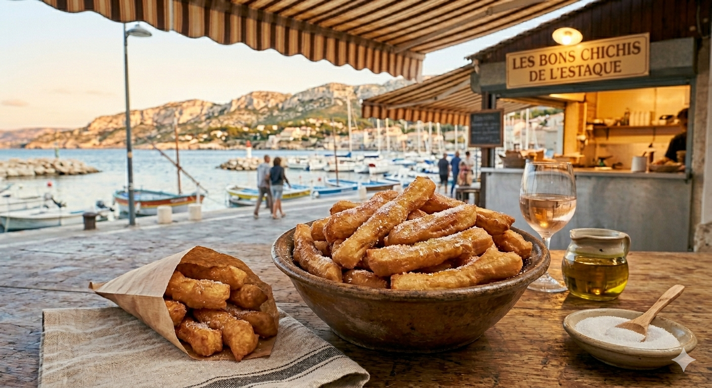

Impossible de terminer notre balade à l'Estaque sans le rituel sacré du Chichi Frégi. "Frégi" veut dire frit en provençal. C'est le goûter des dimanches au bord de l'eau, celui qui laisse du sucre sur les doigts et un souvenir impérissable dans le cœur.

Le vrai secret de l'Estaque, c'est l'incorporation de l'huile d'olive dans la pâte et ce parfum de fleur d'oranger qui s'échappe des grandes poêles à frire. Contrairement à d'autres beignets, le chichi doit être long, bien dodu et incroyablement léger à l'intérieur. On le roule dans le sucre cristal dès sa sortie du bain d'huile.
1. Le Levain : Délayez la levure dans un peu d'eau tiède avec une pincée de sucre. Laissez reposer 10 minutes.
2. La Pâte : Dans un grand saladier, mélangez la farine, le sel et le sucre. Versez le levain, le reste de l'eau tiède, l'huile d'olive et la fleur d'oranger. Pétrissez énergiquement jusqu'à obtenir une pâte souple et un peu collante. C'est l'huile d'olive qui donnera cette texture unique.
3. Le Repos : Couvrez d'un linge et laissez doubler de volume dans un endroit chaud pendant au moins 2 heures. La pâte doit être pleine de bulles d'air.
4. Le Façonnage : Sur un plan de travail huilé, prélevez des morceaux de pâte et roulez-les en longs boudins (environ 15-20 cm).
5. La Friture : Plongez-les dans l'huile bien chaude. Ils doivent gonfler immédiatement. Retournez-les pour qu'ils soient bien dorés de chaque côté. Égouttez-les rapidement et roulez-les aussitôt dans le sucre cristal.
Le conseil de Marie : Le chichi n'attend pas ! Il se déguste brûlant, en marchant sur le port de l'Estaque, pour que le plaisir soit complet.